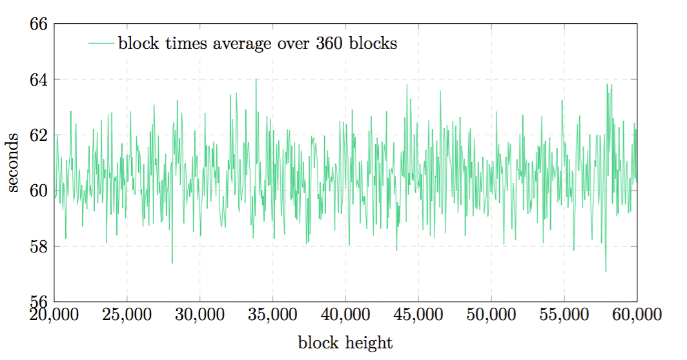

ブロック作成難度
ブロックの作成難度(difficulty)は直近60ブロックの難度とタイムスタンプから計算されます。60ブロック以下しか存在しない場合はあるだけ考慮に入れます。
図4

メインネットにおける、360ブロックの平均ブロック生成難度。
ブロックが１つしかない場合は作成難度としてあらかじめ定められた初期難度(initial difficulty)であるを用います。 それ以外の場合は以下のようにして計算されます。
- ... 平均難度
- ... 平均作成時間
- ... 新規作成難度
前回のブロックに比べて新しい難度に5%以上の増減がある場合、変化率は5%に切り下げられます。
さらに、難度は一定の幅に収まるようになっています。難度が以上か以下の場合は切り上げられるか切り捨てられます。
このアルゴリズムを用いた場合、ブロック生成時間は平均秒の範囲に収まることがシミュレーションと版での実験によって確認されています。
作成難度の最大変化率として5%という遅い値を採用していることで、全体の50%以下の重要度しか持たない攻撃者が隠れてチェーンを作成しても60秒よりもかなり長い時間がかかるため、攻撃を成功させることが難しくなっています。